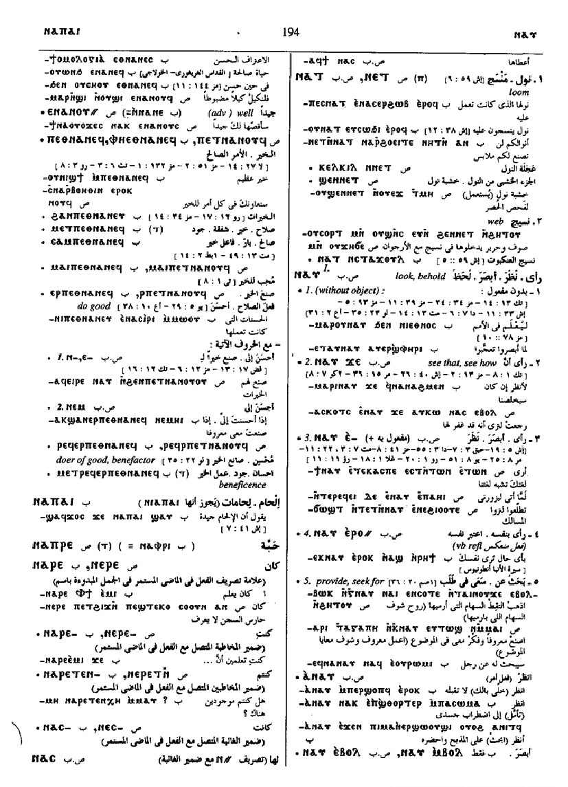

(verb)
intr: look, behold
― no obj [οραν, ιδειν, βλεπειν]
―― with ϫⲉ-, see that, how
― c ⲉ- , sometimes + ethic dat
― with ⲉ- dat commodi
―― provide, seek out
― no obj [οραν, ιδειν, βλεπειν]
―― with ϫⲉ-, see that, how
― c ⲉ- , sometimes + ethic dat
― with ⲉ- dat commodi
―― provide, seek out

(S, B)
ⲛⲁⲩ
(sA, F) ⲛⲉⲩ
(A, sA) ⲛⲟ
(Sa) ⲛⲱ
(O) ⲛⲁⲟⲩ
(S, B) imperative: ⲁⲛⲁⲩ
(sA, F) imperative: ⲁⲛⲉⲩ
(A) imperative: ⲉⲛⲟ
(sA, F) ⲛⲉⲩ
(A, sA) ⲛⲟ
(Sa) ⲛⲱ
(O) ⲛⲁⲟⲩ
(S, B) imperative: ⲁⲛⲁⲩ
(sA, F) imperative: ⲁⲛⲉⲩ
(A) imperative: ⲉⲛⲟ
| (S, A, sA, B, F) ― ⲉⲃⲟⲗ | (oftener ⲙⲃ. B), see opp not see, be blind [βλεπειν, οραν]4505 | Crum: 234a | |||||||
| (S) ⲣⲉϥⲛ. {ⲉⲃⲟⲗ} | seer4506 | ||||||||
| (B) ― ⲙⲃⲟⲗ | meaning as last4507 | ||||||||
| ⲙⲉⲧⲁⲧⲛ. {ⲙⲃⲟⲗ} | sightlessness [αορασια]4508 | ||||||||
| (S, B) ― (ⲡ) | (noun male)
sight, view, vision [ορασισ, οραμα, οπτασια, ειδοσ]1221 |
||||||||
| (S, B) ⲁⲧⲛ. | unseen, unseeing + ⲉ- [αορατοσ]1222 | ||||||||
| (B) ⲉⲣ ⲁⲧⲛ. | 1223 | ||||||||
| (S, B) ⲣⲉϥⲛ. | seer [ορατησ]
as adj B, seeing1224 |
Crum: 234b | |||||||
| (B) ⲉⲣ ⲣ. | become seer, spectator1225 | ||||||||
| (S, B) ϭⲓⲛⲛ., ϫⲓⲛⲛ. (ⲡ/ⲧ) | (noun male/female)
sight, vision [οπτασια, ορασισ]1226 |
||||||||
Crum: 233,234

233

234
Dawoud: 194b-195a

194

195